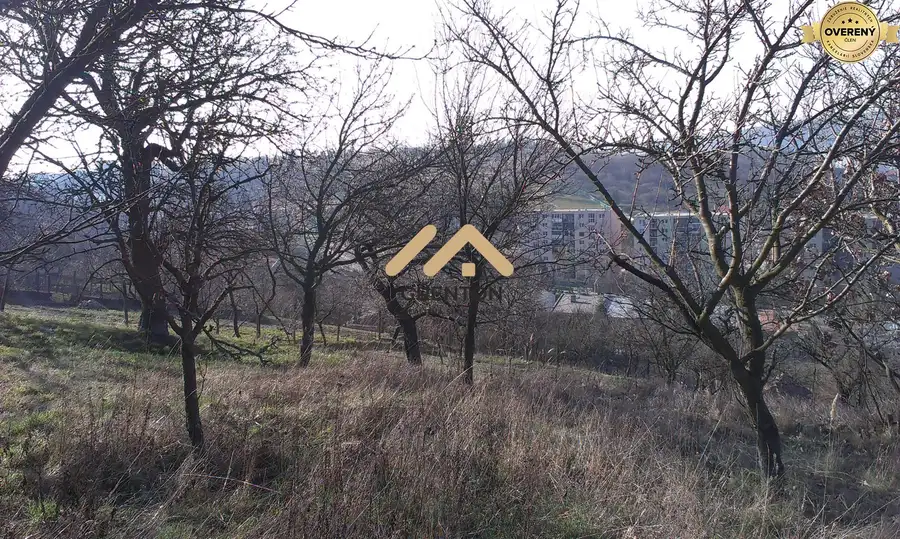
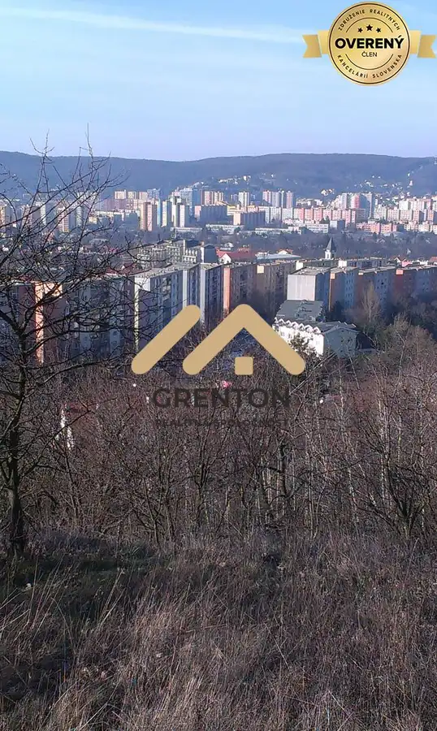

Záhrada s možnosťou stavby na individuálnu rekreáciu, Lamač
Lamač, Bratislava



- Plocha1550 m²
- Vlastníctvoosobné
O nehnuteľnosti
Predáme pozemok v Lamači - časť Podháj s veľmi pekným výhľadom na Lamač. Šírka 10 m vo vrchnej časti a 18 metrov v spodnej časti.
Cena 105Eur / m2. Elektrika je na hranici pozemku, na pozemku sú vysadené ovocné stromy a trávnatý povrch.
Jedná sa o predaj dvoch parciel. (užšia vrchná 10 metrov a spodná so šírkou asi 17 m)
Prístupová cesta najprv asfaltová a potom lesná cesta. Prístup je z vrchnej strany, pričom z pozemku je ceľmi pekný výhľad na Lamač.
Pozemok vhodný na stavbu celoročne obývateľnej chaty na individuálnu rekreáciu podľa aktuálne platnej ÚPI. UPI je k dispozícii v RK a na požiadanie je k dispozícii.
Podľa UPI je to stabilizované územie. Momentálne nie je pozemok upravený a je nutné ho vyčistiť od náletových rastlín a upraviť.
Celková výmera je 1550 m2.
Kontaktujte nás, ak sú potrebné následné informácie.
Tel.
Hľadáme 4 izbový byt v Bratislave a 1 izbový byt s balkónom pre konkrétnych klientov.
Kúpime byty v Bratislave v hotovosti.
Realizujeme rekonštrukcie bytov a domov.
Homestaging, sťahovanie.
Oslovte nás s Vašou ponukou na predaj nehnuteľnosti.
Znalecký posudok a nadštandardný predajný servis.
Parametre
- Rozloha pozemku
- 1550 m²
- Vlastníctvo
- osobné
- Status
- aktívne
- Orientácia
- juhozápadná
- Terén
- svahovitý
- Dátum zverejnenia
- 2020-04-08
Kde to je
Mohlo by Vás zaujímať
 PozemokNové
88 800 €Lesné pozemky v katastri Bratislava - Dúbravka
Dúbravka, Bratislava
14800 m²
PozemokNové
88 800 €Lesné pozemky v katastri Bratislava - Dúbravka
Dúbravka, Bratislava
14800 m²
 Rodinné domyNové
420 000 €Na predaj murovaný dom 135 m2 + pivnica 96 m2, pozemok 916 m2, Lozorno
Lozorno
4-izbový135 m²
Rodinné domyNové
420 000 €Na predaj murovaný dom 135 m2 + pivnica 96 m2, pozemok 916 m2, Lozorno
Lozorno
4-izbový135 m²
 Rodinné domyNové
282 000 €Predané: Rodinný dom v DNV na predaj
Devínska Nová Ves, Bratislava
4-izbový100 m²
Rodinné domyNové
282 000 €Predané: Rodinný dom v DNV na predaj
Devínska Nová Ves, Bratislava
4-izbový100 m²